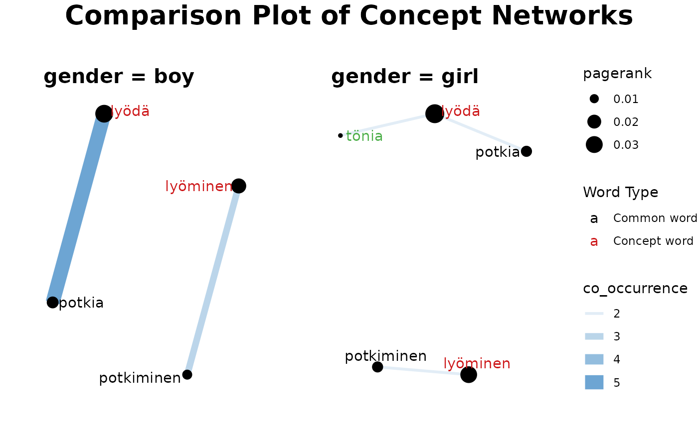
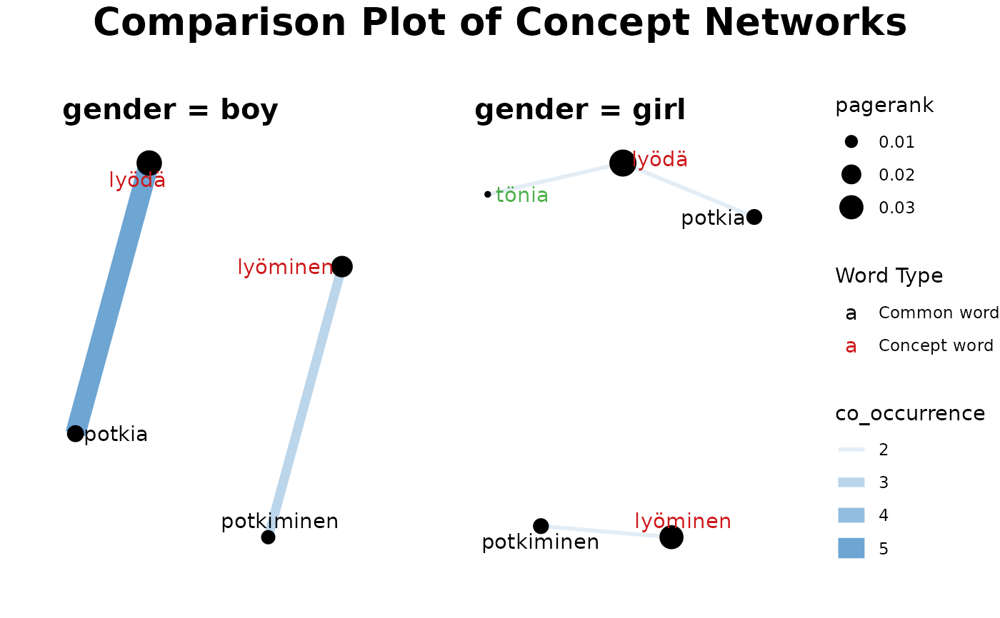
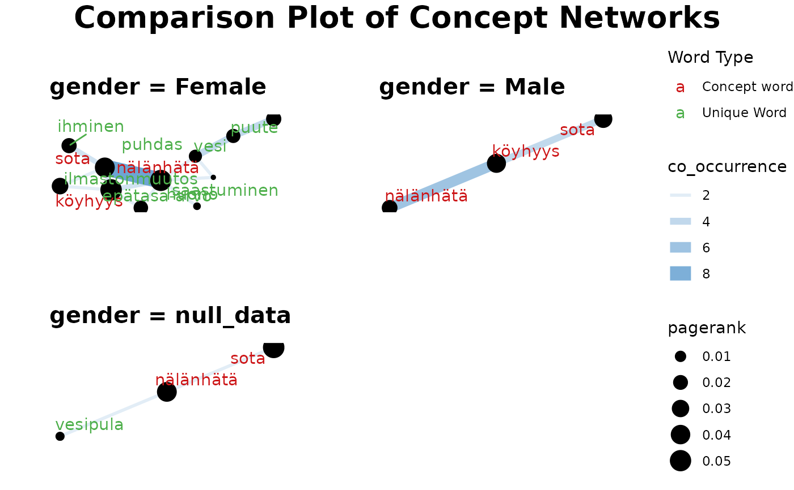

Concept Network- Compare and plot Concept Network
fst_concept_network_compare.RdThis function takes a string of terms (separated by commas) or a single term and, using `textrank_keywords()` from `textrank` package, filters data based on `pos_filter` and finds words connected to search terms for each group. Then it plots a Concept Network for each group based on the calculated weights of these terms and the frequency of co-occurrences, indicating any words that are unique to each group's Network plot.
Usage
fst_concept_network_compare(
data,
concepts,
field,
norm = NULL,
threshold = NULL,
pos_filter = NULL,
use_svydesign_field = FALSE,
id = "",
svydesign = NULL,
exclude_nulls = FALSE,
rename_nulls = "null_data",
title_size = 20,
subtitle_size = 15
)Arguments
- data
A dataframe of text in CoNLL-U format with additional `field` column for splitting data.
- concepts
List of terms to search for, separated by commas.
- field
Column in `data` used for splitting groups
- norm
The method for normalising the data. Valid settings are `"number_words"` (the number of words in the responses, default), `"number_resp"` (the number of responses), or `NULL` (raw count returned).
- threshold
A minimum number of occurrences threshold for 'edge' between searched term and other word, default is `NULL`. Note, the threshold is applied before normalisation.
- pos_filter
List of UPOS tags for inclusion, default is `NULL` to include all UPOS tags.
- use_svydesign_field
Option to get `field` for splitting the data from a svydesign object, default is `FALSE`
- id
ID column from raw data, required if `use_svydesign_weights = TRUE` and must match the `docid` in formatted `data`.
- svydesign
A svydesign object which contains the raw data and weights.
- exclude_nulls
Whether to include NULLs in `field` column, default is `FALSE`
- rename_nulls
What to fill NULL values with if `exclude_nulls = FALSE`.
- title_size
size to display plot title
- subtitle_size
size to display title of individual concept network
Examples
con1 <- "lyödä, lyöminen"
fst_concept_network_compare(fst_child, concepts = con1, field = 'gender')

s <- survey::svydesign(id=~1, weights= ~paino, data = child)
c2 <- fst_child_2
i <- 'fsd_id'
fst_concept_network_compare(c2, con1, 'gender', NULL, NULL, NULL, T, i, s)

con2 <- "köyhyys, nälänhätä, sota"
fst_concept_network_compare(fst_dev_coop, con2, 'education_level')
